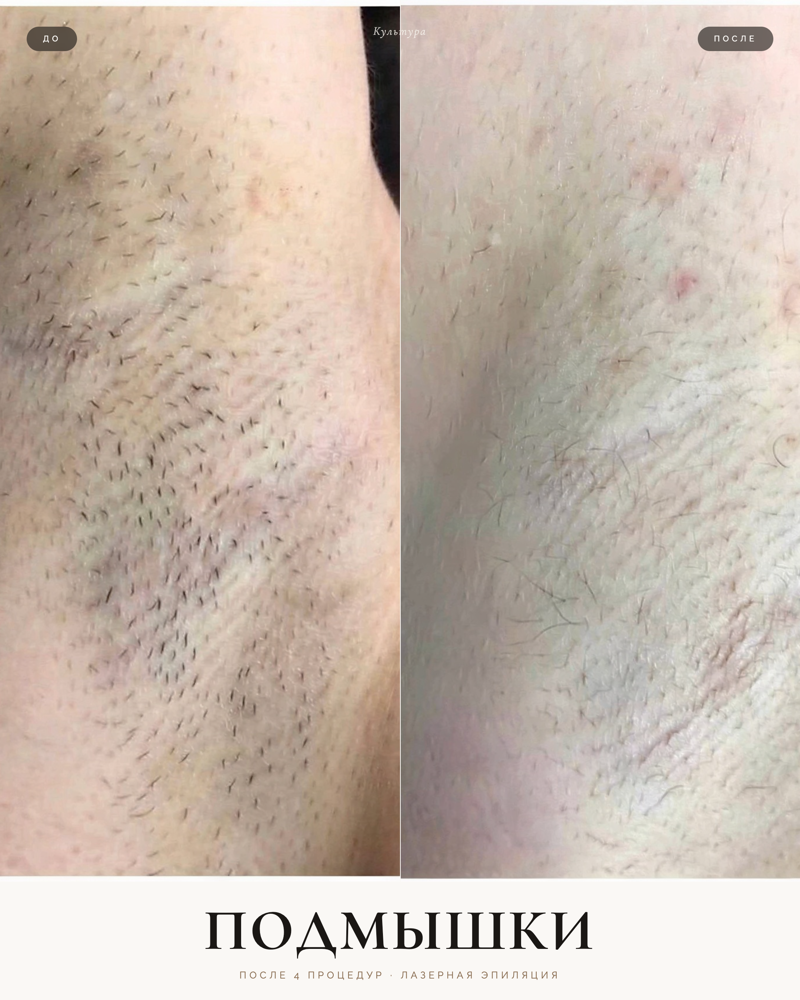
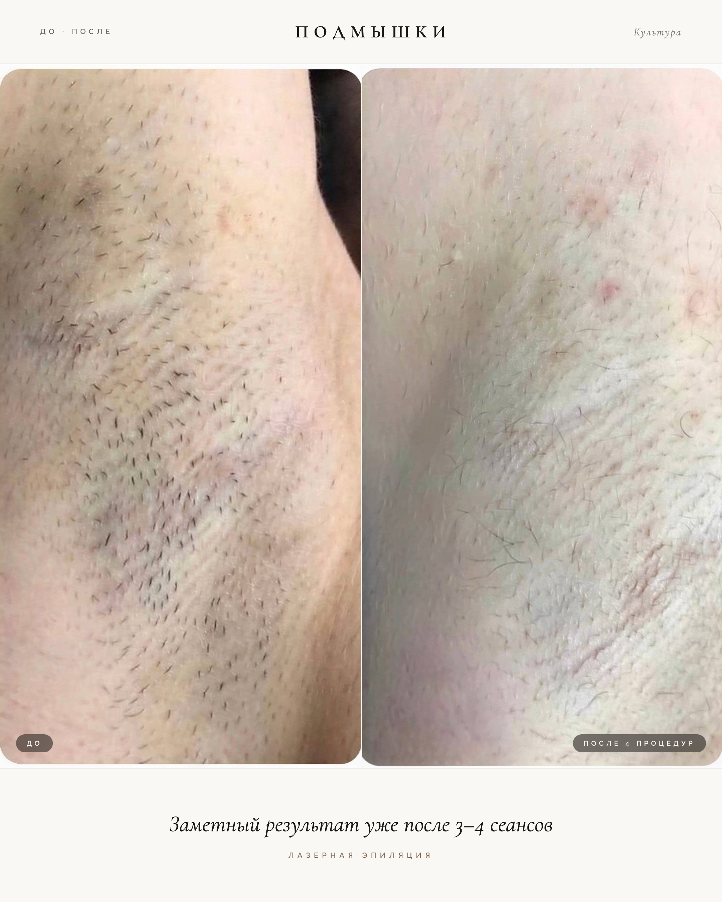
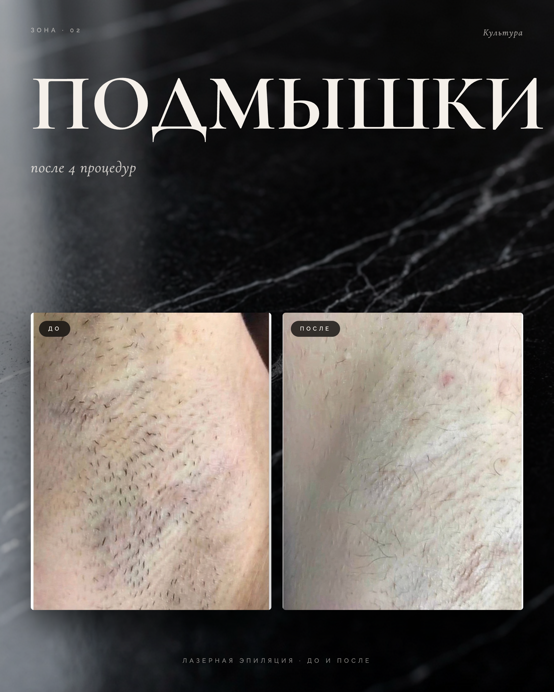
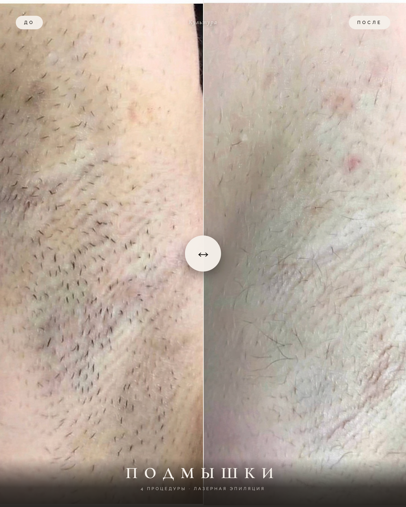
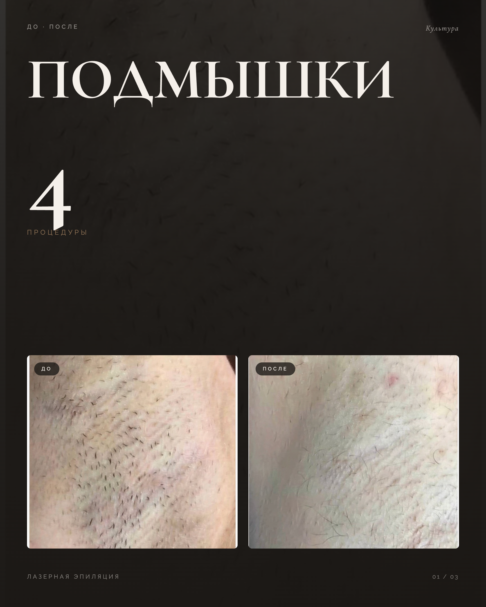
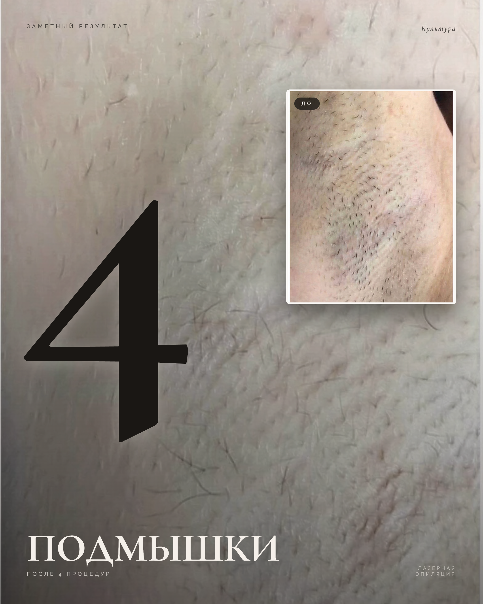
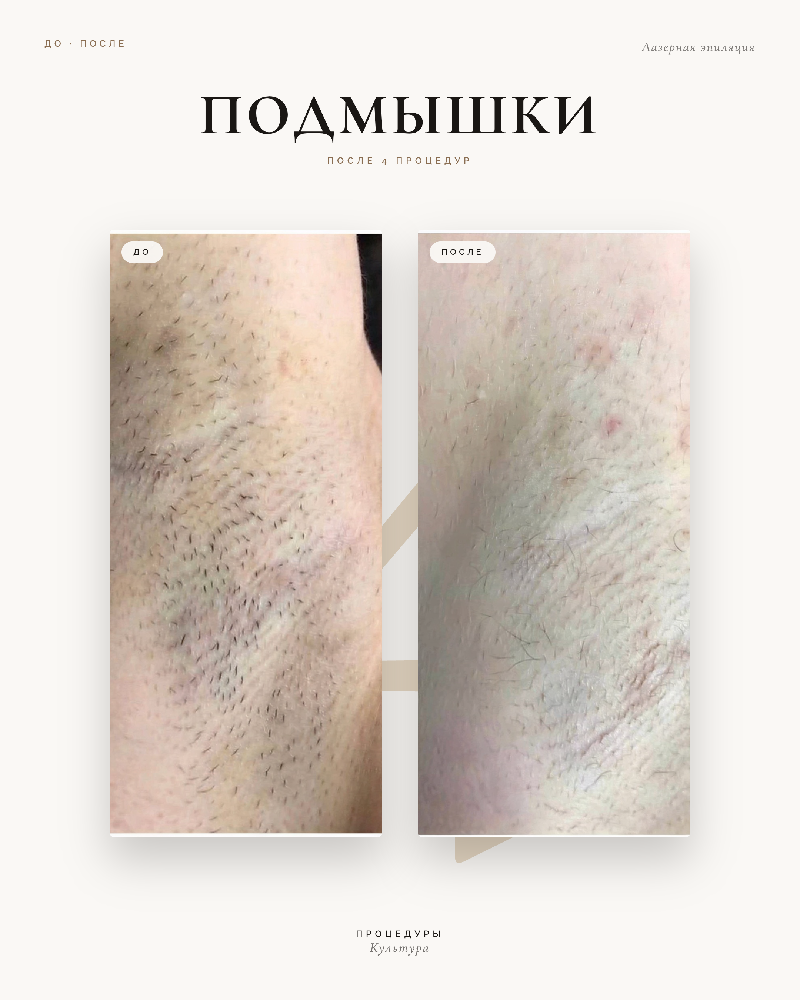

v2
Diptych full-bleed
Две фотки во всю высоту, тонкий разделитель, кремовая полоса с заголовком снизу. Самый сильный визуальный удар «до/после» — контраст моментально читается.
★ ТОП-1

v7
Тихая editorial
Узкая полоса сверху (тэги), full-bleed диптих, italic-цитата снизу «заметный результат уже после 3–4 сеансов». Самый по-голосу проекта — тишина, доверие.
★ ТОП-2

v5
Мрамор-обложка
Чёрный мрамор как фон, крупный белый Cormorant «ПОДМЫШКИ» сверху, два фото-карточки внизу. Премиум-кодекс бренда, как slide_01 от 06_05.
★ ТОП-3

v4
Слайдер-мокап
Имитация интерактивного «потяни и сравни» — белая линия + круглый маркер «↔». Оригинально, цепляет, но интерфейсный вайб может смотреться менее «студийно».
альтернатива

v1
Dark hero (06_05-style)
Тёмный кожный фон, гигантская «4» слева, две фото-карточки внизу. Близко к одобренному slide_03 от 06_05 — безопасный, но без вау.
безопасно

v6
Magazine solo
Кожа-после на весь фон, гигантская чёрная «4» по центру, медальон «до» в углу. Дерзкий, журнальный — но воспринимается сложнее «классики».
смело

v3
Цифровой анкер
Кремовый фон, две фото-карточки в центре, гигантская «4» сзади как водяной знак. Чисто, но цифра еле видна — слабее ожидания.
средне

×
текущий (плохой)
Для сравнения: предыдущий слайд. Использован слабый исходник armpit_4, мелкие фотки в центре, вертикальные надписи по бокам, цифра «4» оторвана от смысла.
переделываем